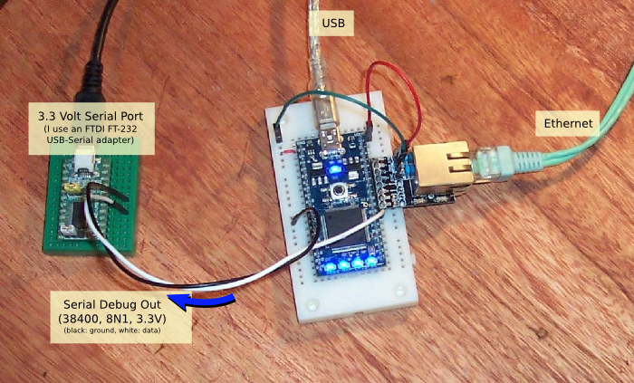

The easiest way to get started with eFirmata is probably with the mbed, with
an ethernet connection:
Same pic, with notes:
(You'll have to solder the mbed-ether-kit yourself.)
(I think that the power and ground connection from the ethernet
to the mbed serve as biasing for the magnetics, I'm not sure...
The system will still work without these wires, but auto-negotiation
with the ethernet switch will oftentimes take longer.)
Serial Debug
I'm the kind of programmer that does debugging with printf() statements, so
I use a serial port.
Debug-out is on UART#2, pin #28:

Baud rate: 38400. 8N1.
Note: A "proper" PC serial port operates a 12 volts. The mbed operates at 3.3 volts.
The serial adapters that are commonly used in the Arduino world
(such as this one) should work just fine.
PWM
The mbed has 6 PWM outputs. We can use those outputs as light dimmers. It's
easy to connect these outputs to LEDs:
From here, you can use the sample code, ( workstation/userFirmataSender.py ), to control
the LEDs.